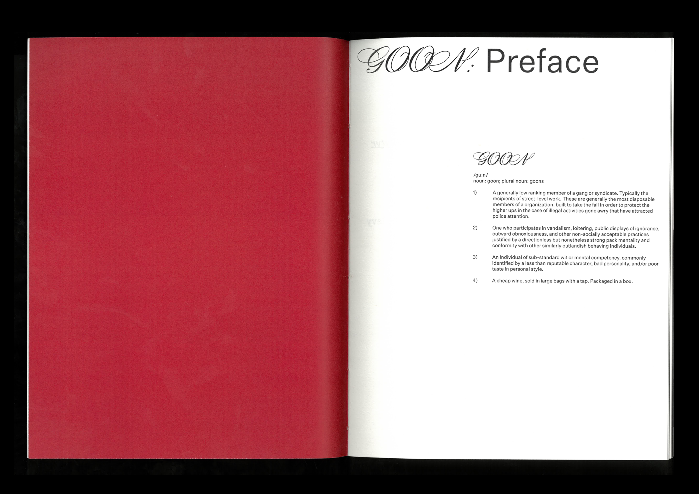
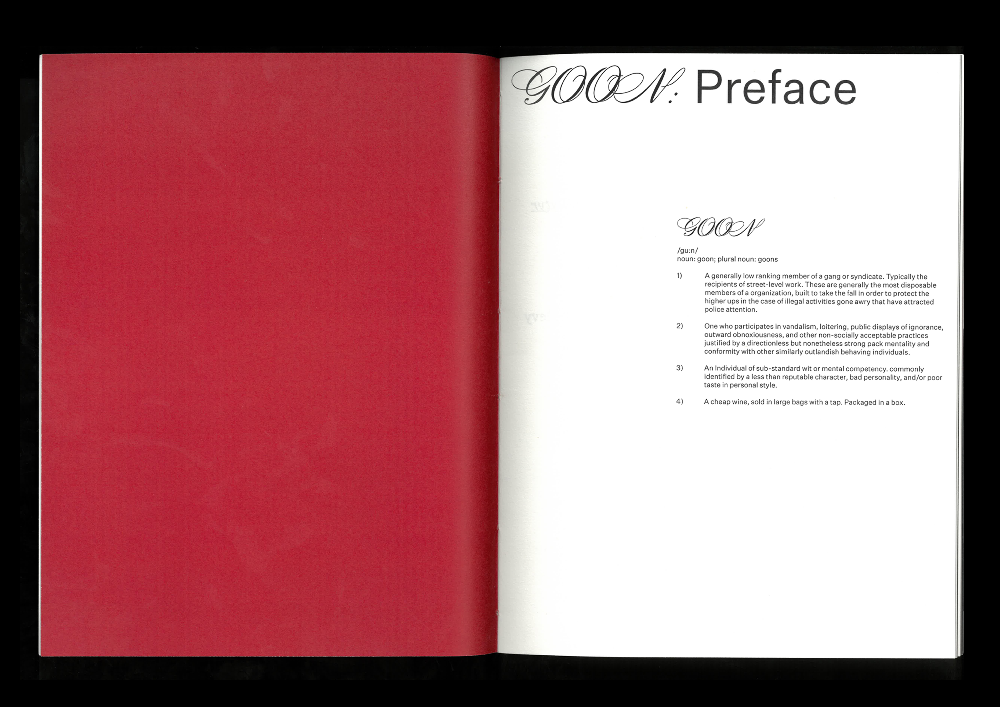
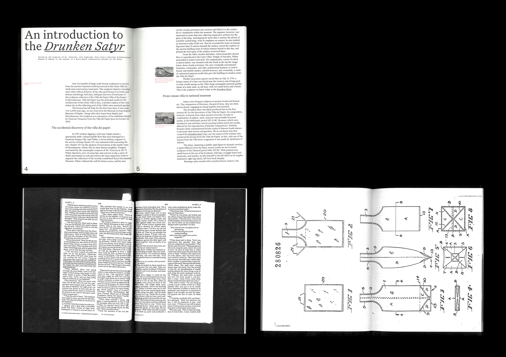
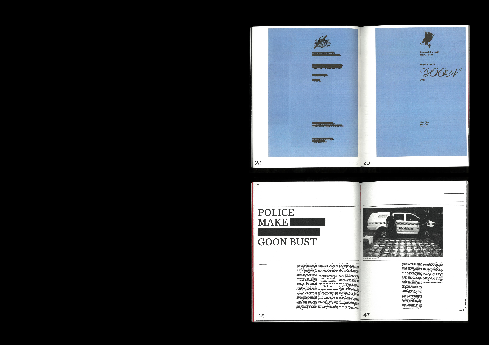
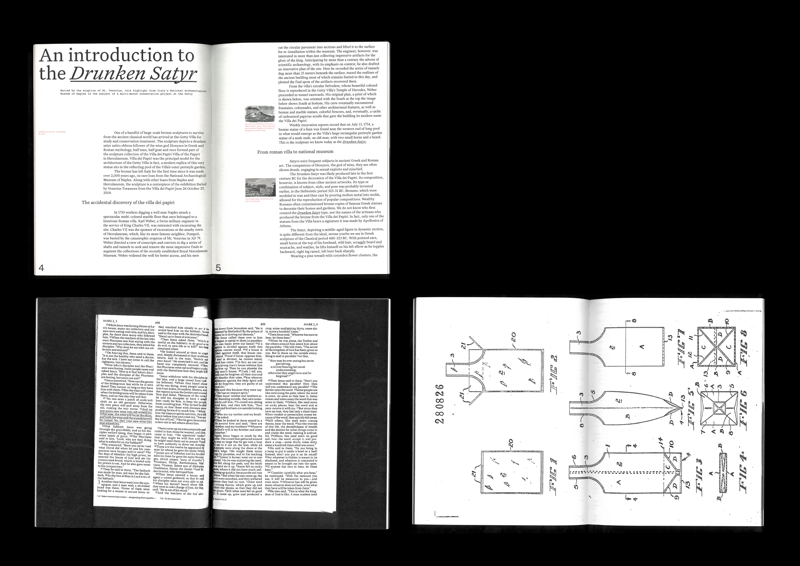
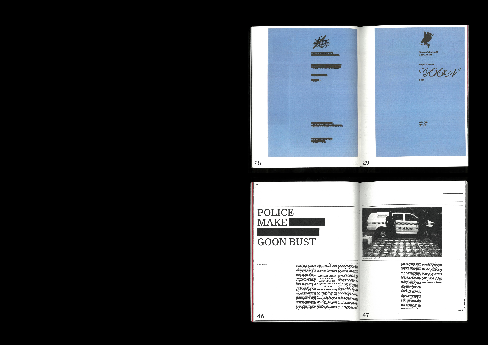

The Perry Line
Perry Poster
Dulcie Typeface
Goon
Flatwarming Risograph
Whitecliffe Standard
2001: A Space Odyssey
Twelve Hamilton Houses
Bridging Victoria & River: A Print Project
Fairfield Bridge Risograph Series
LEVEL11 Grad Show 2020
Perry Poster
Dulcie Typeface
Goon
Flatwarming Risograph
Whitecliffe Standard
2001: A Space Odyssey
Twelve Hamilton Houses
Bridging Victoria & River: A Print Project
Fairfield Bridge Risograph Series
LEVEL11 Grad Show 2020
About
Contact
 

 





210x275mm
270 pages
For this project the task was to research and explore a chosen object to the fullest extent. ‘Goon’ is based on a cask wine or more colloquially referred to as a “Goon” in New Zealand. This book documents a critical exploration and analysis of a cask wine, its materiality as well as the social and historic background. The intention of the book was to brainstorm and develop a variety of ideas that act in a rhizomatic way and can be associated back to a cask wine. The final outcome is a 270 page book that is perfect bound with a risographed cover.